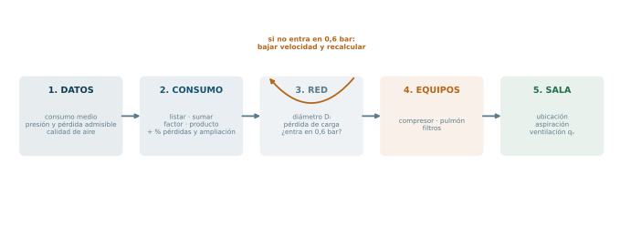
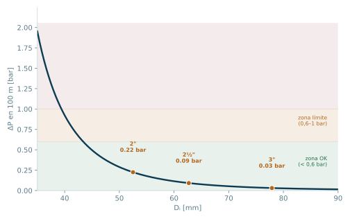
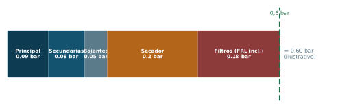
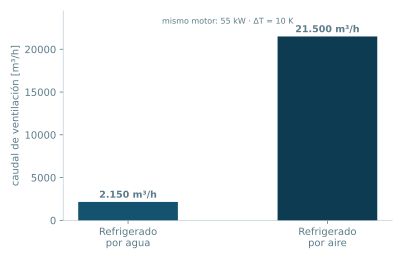

Proyecto integral de la instalación
Los cinco bloques anteriores describieron el sistema componente por componente. Este bloque pone números: consumo, diámetros, pérdida de carga, selección del compresor y de la sala. Es el que convierte la descripción en un proyecto.
Bloque 6 · Apunte de cátedra, páginas 62 a 69 y 76 a 79 · Ing. Luciano Manavella · Instalaciones Industriales, UTN FRC
De dónde venimos y a dónde vamos
Los cinco bloques anteriores describieron el sistema componente por componente. Sabemos qué hace un compresor, qué hace un secador, para qué está el pulmón, cómo se organiza la red y qué es un FRL.
Este bloque hace otra cosa: pone números. Es el que convierte una descripción en un proyecto.
Y el orden en que se hace no es arbitrario, porque cada decisión depende de la anterior:
cuánto aire hace falta → a qué presión y con qué pérdida admisible → con qué calidad → qué diámetro tiene cada tramo → cuánta presión se pierde realmente → qué compresor se elige → qué pulmón → qué filtros → dónde va la sala y cómo se ventila.
Si te preguntan en qué orden se proyecta una instalación de aire comprimido, esa cadena es la respuesta.
ℹ Todo lo anterior se usa acá
- Del Bloque 0, la calidad ISO 8573-1 que define cuántos equipos de tratamiento hacen falta.
- Del Bloque 1, el rendimiento del compresor, que acá se traduce en costo operativo.
- Del Bloque 2, los equipos de tratamiento, que se seleccionan y aportan su propia pérdida de carga.
- Del Bloque 3, el caudal Normal y la fórmula del pulmón, que se aplican tal cual.
- Del Bloque 4, la topología, el trazado y los materiales, que fijan la longitud y los accesorios del cálculo.
- Del Bloque 5, el FRL, que es el consumidor final del caudal que se está calculando.
✔ Cómo estudiar este bloque para opción múltiple
Este es el bloque con más valores numéricos aislados de toda la unidad, y por lo tanto el más «fácil» de preguntar en opción múltiple. Casi cada recomendación del apunte es un ítem potencial. Tres consejos concretos:
- Memorizá los números que son criterios de diseño: 7 a 8 bar, fugas del 5 al 10 %, caída de 0,6 bar recomendada y 1 bar máxima, velocidades de 5 a 15 m/s con topes de 8 y 15, pérdidas del 5 al 15 % en el consumo. Son pocos y son casi seguros.
- No intentes memorizar las fórmulas de memoria exacta, sino sus dependencias. Que el diámetro va con la raíz del caudal y que la pérdida va con D⁵ en el denominador es más preguntable que la constante 76,35.
- Los tres casos particulares (A, B y C) son un ejercicio de emparejamiento. Se preguntan casi siempre así: te dan la situación y tenés que elegir la solución. Entendé la lógica una vez y no los tenés que memorizar.
Objetivos de aprendizaje
- Enumerar los tres datos requeridos para proyectar una instalación.
- Ejecutar mentalmente los cinco pasos de la determinación del consumo medio.
- Distinguir factor de simultaneidad de coeficiente de utilización.
- Emparejar cada uno de los tres casos particulares con su solución.
- Calcular un diámetro interior a partir del caudal, la presión y la velocidad, y saber qué velocidad corresponde a cada tipo de tubería.
- Explicar por qué la fórmula de pérdida de carga trabaja con diferencias de cuadrados de presión.
- Distinguir caudal Normal de caudal FAD y convertir entre ambos.
- Explicar por qué, al seleccionar un compresor, el costo operativo pesa más que la amortización.
- Enumerar las razones para centralizar la sala de compresores y los cuidados del aire de aspiración.
- Calcular el caudal de ventilación y explicar la diferencia entre refrigeración por aire y por agua.
Mapa de entrada

1. Punto de partida
Las instalaciones industriales de aire comprimido para neumática utilizan presiones de producción y distribución en el rango de 7 a 8 bar.
Dependiendo de la calidad del aire requerido, la instalación requerirá de más o menos componentes. El esquema completo del apunte (Fig. 60, p. 62) muestra un sistema con diferentes opciones de refrigeradores posteriores y secadores: esa modularidad es justamente el punto. No hay una instalación «estándar»; hay una instalación que cumple una clase ISO.
1.1 Los tres datos requeridos
Datos de entrada del proyecto
- Determinación del consumo medio.
- Presión de trabajo y pérdida de carga admisible.
- Calidad del aire necesario.
1.2 Las dos recomendaciones numéricas de arranque
De la lista de recomendaciones del apunte, dos son cuantitativas y condicionan todo el cálculo. (Las demás, de la C a la L, son reglas de trazado y montaje y están desarrolladas en el Bloque 4.)
Recomendaciones A y B
A. Pérdidas admisibles de aire. Una buena práctica es que las fugas no superen entre el 5 y el 10 % de la capacidad total de los compresores instalados. Este porcentaje se debe contemplar al definir la capacidad de los compresores.
B. Caída de presión. Se recomienda que la caída de presión del total de la instalación sea de 0,6 bar, con un límite máximo de hasta 1 bar.
ℹ Por qué 0,6 bar y no cualquier número
Porque cada bar de caída se paga dos veces.
Se paga una vez en la generación: si la herramienta necesita 6 bar y la red pierde 1 bar, el compresor tiene que generar a 7. Y comprimir a mayor presión cuesta más trabajo, como viste en el Bloque 1 con la curva de trabajo contra relación de compresión.
Se paga otra vez en el desempeño: las herramientas neumáticas pierden par y velocidad muy rápido por debajo de su presión nominal. Una llave de impacto a 5,5 bar en vez de 6,3 no trabaja un 13 % peor: puede trabajar un 25 % peor, porque el par depende de la presión de forma más que proporcional en buena parte de su rango.
El 0,6 bar es el punto donde el costo de poner un caño más grande se equilibra con el costo de generar a mayor presión durante toda la vida útil. El 1 bar es el límite después del cual la instalación se considera mal proyectada.
2. Determinación del consumo medio
El apunte lo plantea como una secuencia de cinco pasos. Es una lista ordenada y es muy preguntable.
Los cinco pasos
- Listar cada una de las herramientas, equipos, etc., con su consumo nominal (Qnom y Ptrabajo).
- Sumar todos los caudales normalizados del listado del punto 1.
- Determinar el Factor de Simultaneidad (global) o el Coeficiente de Utilización (individual).
- El producto de la sumatoria del punto 2 por el factor del punto 3 da el caudal que debe suministrar el sistema.
- Al valor del punto 4 se le adiciona un % por pérdidas (entre 5 y 15 %) y un % extra si se prevé una futura ampliación.
Este último valor obtenido es el caudal mínimo a suministrar.
2.1 Los dos factores
| Factor de simultaneidad | Coeficiente de utilización | |
|---|---|---|
| Alcance | Global (toda la instalación) | Individual (cada consumo) |
| Definido por | La cantidad de consumos que funcionan de manera simultánea | La cantidad de horas de funcionamiento continuo de los consumos |
| Pregunta que responde | ¿Cuántos están prendidos a la vez? | ¿Cuánto tiempo trabaja cada uno? |
| Cuándo no hay datos | Se recurre a tablas con valores aproximados, si es un proyecto nuevo y no hay experiencia | — |
ℹ Son dos formas de decir lo mismo desde ángulos distintos
Las dos atacan el mismo hecho: nadie usa todo al mismo tiempo, todo el tiempo. Si dimensionaras el compresor para la suma de todos los consumos nominales, tendrías una máquina enorme trabajando al 30 % de carga durante toda su vida.
La diferencia está en cómo lo modelás:
- El factor de simultaneidad mira la planta desde arriba y pregunta cuántas máquinas están andando a la vez. Es un número global que multiplica a la suma total.
- El coeficiente de utilización mira máquina por máquina y pregunta qué fracción del tiempo trabaja cada una. Es un número individual que multiplica al consumo de cada equipo antes de sumar.
Por eso el apunte dice «o»: son dos caminos alternativos, no dos correcciones que se apliquen una encima de la otra. Aplicar los dos sería contar el mismo descuento dos veces.
⚠ Los porcentajes del paso 5 son dos, no uno
Al caudal ya corregido se le suman dos incrementos separados:
- Un porcentaje por pérdidas, entre 5 y 15 %. Ojo con este rango: no es el mismo número que el de la recomendación A, que fija el tope de fugas admisibles en 5 a 10 % de la capacidad instalada. Son dos criterios distintos que hablan de fugas y que se parecen lo suficiente como para armar un buen distractor.
- Un porcentaje extra por ampliación futura, que no tiene valor fijado y depende del proyecto.
2.2 Ejemplo de cálculo
Tomemos un taller con este listado (los consumos son ilustrativos):
| Equipo | Cantidad | Qnom unitario [N l/min] | Total [N l/min] |
|---|---|---|---|
| Llaves de impacto 3/4" | 6 | 900 | 5.400 |
| Pistolas de soplado | 10 | 200 | 2.000 |
| Lijadoras orbitales | 4 | 350 | 1.400 |
| Taladros neumáticos | 3 | 400 | 1.200 |
| Pistolas de pintar | 2 | 300 | 600 |
| Suma (paso 2) | 10.600 | ||
Paso 3 y 4. Con un factor de simultaneidad de 0,70:
10.600 × 0,70 = 7.420 N l/min
Paso 5. Con un 10 % por pérdidas y un 15 % por ampliación futura:
7.420 × 1,10 × 1,15 = 9.386 N l/min = 563 N m³/h
Ese es el caudal mínimo a suministrar. Se adopta un compresor de 600 N m³/h, que es el valor comercial inmediato superior.
Calculadora de consumo medio
Poné la suma de caudales nominales (paso 2) y los tres factores de corrección, y mirá cómo se reparte la cascada de los cinco pasos.
3. Casos particulares con parámetros de consumo variables
El apunte da tres recomendaciones para resolver situaciones en las que los consumos no son homogéneos. Se preguntan por emparejamiento.
| Caso | Situación | Solución |
|---|---|---|
| A | Gran caudal a alta presión + caudal pequeño a baja presión | Válvula reductora en el circuito secundario |
| B | Gran caudal a baja presión + caudal pequeño a alta presión | Compresor adicional en el circuito secundario |
| C | Gran caudal en tiempo reducido + caudal pequeño durante largos períodos | Dos circuitos independientes |
ℹ La lógica detrás de los tres casos
No hace falta memorizarlos si entendés el criterio, que es siempre el mismo: no comprimir grandes caudales a presiones que no necesitan.
Caso A. El grueso del aire ya necesita alta presión, así que el compresor genera alta y punto. Al consumo chico que necesita menos, le ponés una reductora. Reducir es barato: se pierde algo de energía en el estrangulamiento, pero sobre un caudal pequeño esa pérdida es despreciable.
Caso B. Acá pasa al revés y es el caso que rompe la intuición. Si el grueso del aire necesita baja presión y solo un consumo chico necesita alta, generar todo a alta presión significaría comprimir de más el caudal grande, que es la mayor parte del aire. Eso sí que cuesta caro. Conviene generar a baja para el grueso y poner un compresor adicional chico dedicado al consumo de alta.
Caso C. El problema no es de presión sino de tiempo. Un pico grande y breve conviviendo con un consumo chico y permanente obliga a un compresor grande que después queda ocioso. Se resuelve separando circuitos: uno chico y continuo, otro dimensionado para el pico.
Regla nemotécnica para el parcial: si la diferencia es de presión y el grande está arriba, se reduce; si el grande está abajo, se agrega un compresor. Si la diferencia es de tiempo, se separan los circuitos.
4. Pre-dimensionamiento de las tuberías
4.1 Cálculo del diámetro interior
Se parte de la definición de velocidad, V = Q / (S·P), con S = π Di² / 4, y se despeja:
Fórmula · diámetro interior
Di = √( 4Q / (π · P · V) )
con Q en N m³/s, P en bar absolutos, V en m/s y Di en m
⚠ Dos detalles de esta fórmula
1. Por qué aparece la presión dividiendo. Porque Q está en condiciones Normales, no en condiciones reales de la cañería. Adentro del caño, ese mismo aire está comprimido y ocupa menos volumen: aproximadamente Q/P (dividido por la presión en bar). La división por P es lo que convierte el caudal Normal en caudal real circulante antes de calcular la velocidad.
Esto implica una aproximación silenciosa: se está tomando PN ≈ 1 bar en vez de 1,013. El error es del 1,3 % y para un pre-dimensionamiento es irrelevante, pero conviene saber que está ahí.
2. Una errata del apunte. En la página 64, la lista de variables dice «Di = Diámetro interior de la cañería en m²». Es un error de tipeo: el diámetro es una longitud y va en m. El que va en m² es el área S.
4.2 Velocidades recomendadas
Rango general y topes por tipo de tubería
5 m/s ≤ V ≤ 15 m/s
Teniendo en cuenta lo siguiente:
- Tubería principal y tuberías secundarias: la máxima velocidad debe ser de 8 m/s.
- Tuberías de servicio: la máxima velocidad debe ser de 15 m/s.
Una vez calculado el diámetro interior se debe seleccionar la medida comercial más próxima. Generalmente se elige el inmediato superior.
ℹ Por qué la principal admite menos velocidad que la bajante
Parece contradictorio: por la principal pasa más caudal, y sin embargo se le permite menos velocidad.
La razón es la longitud. La pérdida de carga es proporcional a la longitud del tramo. La tubería principal recorre toda la planta, decenas o cientos de metros; la bajante mide dos o tres metros. Un mismo criterio de velocidad daría una pérdida enorme en la principal y despreciable en la bajante.
Además, la pérdida en la principal la sufren todos los consumos de la planta, mientras que la de una bajante la sufre solo la herramienta que cuelga de ella. Se es más exigente donde el error se propaga.
Y hay un tercer motivo: el ruido y el arrastre. A velocidades altas, el aire arrastra el condensado del fondo del caño en vez de dejarlo escurrir por la pendiente. Ocho metros por segundo es aproximadamente el límite donde el arrastre empieza a ser notorio.
4.3 Ejemplo
Para el caso del capítulo 2, con 600 N m³/h a 7 bar absolutos, en la tubería principal (velocidad máxima 8 m/s):
Q = 600/3600 = 0,1667 N m³/s
Di = √(4 × 0,1667 / (π × 7 × 8)) = √0,00379 = 0,0616 m = 61,6 mm
Se adopta la medida comercial inmediata superior: 2½", con diámetro interior aproximado de 62,7 mm.
5. Cálculo de la pérdida de carga
Fórmula · pérdida de carga en un tramo
P1² − P2² = 76,35 · L · Q1,875 / Di5
P2 = √(P1² − 76,35·L·Q1,875/Di⁵) · ΔP = P1 − P2
P1 y P2: presión absoluta en ambos extremos, bar abs · L: longitud, m, incluyendo la longitud equivalente de los accesorios · Q: caudal Normal, N m³/h · Di: diámetro interior, mm
Si el valor de la pérdida de presión resulta muy elevado, se debe seleccionar una velocidad más baja, recalcular el diámetro interior y recalcular la diferencia de presión. Es un cálculo iterativo.
⚠ Las unidades de esta fórmula son mixtas a propósito
Es una fórmula empírica, no una deducción teórica. Por eso convive un diámetro en milímetros con presiones en bar y un exponente de 1,875 que no sale de ninguna ley física elemental: sale de ajustar datos experimentales.
Consecuencia práctica: no se pueden cambiar las unidades. Si metés el diámetro en metros, el resultado no se escala, se destruye. Y el 76,35 tampoco es convertible: es la constante que hace cerrar ese juego de unidades específico.
ℹ Por qué la fórmula trabaja con la diferencia de los cuadrados
Esta es la pregunta conceptual más probable de todo el capítulo.
En un líquido, la pérdida de carga es simplemente ΔP, proporcional a la longitud. En un gas no puede ser así, y la razón es que el gas se expande a medida que pierde presión.
Seguí la cadena: el aire avanza por el caño → pierde presión por fricción → al bajar la presión, se expande → al expandirse, aumenta su velocidad (por continuidad, la misma masa ocupa más volumen en la misma sección) → al aumentar la velocidad, la fricción crece → pierde presión más rápido.
O sea que la caída de presión se acelera a lo largo del caño. No es lineal. La forma matemática que captura eso, integrando a lo largo del tramo, es una diferencia de cuadrados de presión, no una diferencia de presiones.
Consecuencia práctica: el mismo caño pierde más al final del recorrido que al principio, y por eso conviene calcular tramo por tramo y no aplicar una regla proporcional a la longitud total.
◆ La sensibilidad al diámetro es brutal
Mirá el exponente: Di⁵ en el denominador.
Eso significa que si aumentás el diámetro un 20 %, el término de pérdidas se divide por 1,2⁵ = 2,49. Si lo duplicás, se divide por 32.
Al revés: elegir un caño un escalón comercial más chico «para ahorrar» puede duplicar la pérdida de carga de la instalación entera. Esta es la razón matemática detrás de todas las recomendaciones del apunte sobre prever ampliaciones y no escatimar en el diámetro de la principal.
El caudal, en cambio, entra con exponente 1,875, es decir, casi al cuadrado. Duplicar el caudal multiplica las pérdidas por 21,875 = 3,67.

5.1 Longitudes equivalentes
En L se incluye la longitud equivalente de los accesorios. Cada codo, curva, te, válvula o reducción se traduce en los metros de caño recto que producirían la misma pérdida. Los valores se obtienen de tablas como la Fig. 61 (p. 66).
Esta es la conexión numérica con la recomendación D del Bloque 4: cada accesorio que sacás del trazado es longitud que le restás al cálculo.
5.2 El nomograma
Como alternativa a la fórmula, para calcular el diámetro de la tubería se puede usar un nomograma (Fig. 62, p. 67). Para usarlo hay que conocer el caudal, la presión, la caída de presión permitida y la longitud de la tubería.
5.3 Ejemplo continuado
Siguiendo con los 600 N m³/h en la principal de 2½" (Di = 62,7 mm), sobre un tramo de 100 m incluyendo accesorios, partiendo de P1 = 7 bar abs:
P1² − P2² = 76,35 × 100 × 1,618×10⁵ / 9,69×10⁸ = 1,275
P2 = √(49 − 1,275) = √47,725 = 6,908 bar abs
ΔP = 7 − 6,908 = 0,092 bar
Menos de 0,1 bar en 100 metros de principal. Sobra margen dentro de los 0,6 bar totales, que todavía tienen que absorber las secundarias, las bajantes y los equipos de tratamiento.

Calculadora de diámetro y pérdida de carga
Etapa 1: calculá el diámetro necesario y elegí la medida comercial. Etapa 2: con ese diámetro comercial, calculá la pérdida de carga en el tramo.
6. Selección del compresor
6.1 El problema de las unidades
La determinación del tamaño o modelo de un compresor en función del caudal puede contener errores que provoquen la elección de equipos demasiado pequeños. La causa es de unidades.
El aire atmosférico está formado por una mezcla de gases entre los que se encuentra el vapor de agua. Por esa razón, muchos valores de caudal en las especificaciones técnicas de equipos y consumidores se refieren a unidades a las que no afecten ni el vapor de agua ni la temperatura.
Los valores de caudal con los que se selecciona un compresor se pueden encontrar en Normales o FAD, y todos se relacionan entre sí en función de temperatura, presión atmosférica y humedad.
FAD viene de Free Air Delivery, Aire Libre Suministrado. El caudal que la mayoría de los fabricantes indica como FAD en sus catálogos corresponde al medido según la norma ISO 1217, que regula el procedimiento de medición del caudal a la salida de la unidad compresora, así como las condiciones de referencia.
Conversión de Normal a FAD
QFAD = QN × [(273+20)/273] × [1,013/1,00]
TFAD = 20 °C, PFAD = 1,00 bar abs · TN = 0 °C, PN = 1,013 bar abs
En la expresión no se contempla la humedad relativa del aire, porque ese parámetro tiene una incidencia mínima sobre el caudal.
Numéricamente, QFAD ≈ 1,087 QN: el número en FAD es un 8,7 % mayor.
⚠ El error que hace comprar un compresor chico
Es exactamente el que advierte el apunte, y vale la pena verlo con números.
Supongamos que calculaste una demanda de 600 N m³/h y vas al catálogo, donde un compresor figura con 600 m³/h FAD. Parecen iguales. No lo son.
Esos 600 m³/h FAD equivalen a 600/1,087 = 552 N m³/h. Te faltan casi 50 N m³/h, un 8 % de la instalación, que es del mismo orden que todo el margen de fugas que habías previsto.
En qué dirección va el error: como el número FAD es siempre mayor para la misma masa de aire, tratar un valor FAD como si fuera Normal te hace creer que el compresor entrega más de lo que entrega. Por eso el apunte dice que el error lleva a elegir equipos demasiado pequeños, y no demasiado grandes.
Regla para el parcial: para la misma masa de aire, FAD > Normal. Si tenés que comparar, convertí siempre a la misma referencia antes.
6.2 El proceso de selección
Primer paso: definir el tipo de compresor más adecuado para la aplicación. Teniendo en cuenta los caudales y presiones necesarias, se selecciona según las zonas de uso de cada compresor, leídas de un nomograma.
De ahí surge que varios compresores cumplen con los requerimientos de presión y caudal, por lo que la selección no es fácil.
Segundo paso: evaluar el costo total, compuesto por:
Costo total = costo de amortización del equipo + costo operativo
El criterio económico del apunte
- La vida útil de un compresor supera varias veces el proyecto de inversión, por lo que la incidencia de la amortización es insignificante.
- El costo operativo, compuesto fundamentalmente por consumo y mantenimiento, es más significativo.
- Por lo tanto, un factor muy importante para la selección es su eficiencia.
ℹ Por qué el compresor más barato es casi siempre el más caro
Este es el razonamiento económico central del bloque y conecta directo con todo el Bloque 1.
Un compresor industrial consume, a lo largo de su vida, energía por un valor muchas veces superior a su precio de compra. La proporción típica en la literatura es que el costo de la energía representa alrededor del 70 al 80 % del costo total de propiedad, y el equipo en sí, apenas una fracción.
Entonces, una diferencia de dos puntos de rendimiento entre dos máquinas se traduce, sobre diez o quince años de operación continua, en una cifra que hace irrelevante cualquier diferencia de precio de compra.
Y acá se cierra el círculo con el Bloque 1: todo lo que estudiaste sobre rendimiento isotérmico, adiabático, politrópico y global, sobre refrigeración intermedia y sobre compresión en etapas, tiene su consecuencia económica exactamente en este párrafo. Los rendimientos no eran un ejercicio de termodinámica: eran el criterio de compra.
⚠ El apunte repite el número de figura
El apunte llama «Fig. 62» a dos figuras distintas: el nomograma para calcular el diámetro interior de la tubería (página 67) y el gráfico de zonas de uso de los distintos tipos de compresor (página 69). Además, en el texto de la página 68 remite a «los nomogramas (fig. 62)» para la selección del compresor, refiriéndose a la segunda.
Si en el parcial aparece una referencia a la Fig. 62, fijate por el contexto de cuál de las dos se trata: si habla de diámetros, es la de la p. 67; si habla de tipos de compresor, es la de la p. 69.
7. Volumen del depósito
El apunte lo resuelve en una línea: se calcula en función a lo desarrollado en las páginas 49 y 50, es decir, con lo que ya vimos en el Bloque 3:
J = (P₀·V₀)/(a·Δp) · x(1−x)
recordando que el caso de dimensionamiento corresponde a x = 0,5, donde x(1−x) = 0,25.
Para el caso de ejemplo (600 N m³/h, Δp = 2 bar, 15 arranques por hora), el resultado era 5,07 m³.
8. Selección de filtros
El apunte plantea el procedimiento en tres pasos:
- Identificar y evaluar la aplicación y el proceso en los que se usa el aire comprimido. No todos los procesos y aplicaciones requieren el mismo nivel de filtrado, y en muchos casos es necesario utilizar distintos filtros colocados en serie.
- Tener en cuenta el caudal de aire comprimido a filtrar y la presión de trabajo.
- Determinar la pérdida de carga (caída de presión) utilizando datos o gráficos que suministra el fabricante (Fig. 63, p. 70: curva de caudal vs. caída de presión de un filtro).
ℹ El filtro es un consumidor del presupuesto de 0,6 bar
Fijate cómo se cierra el circuito. La recomendación B fija una caída total admisible de 0,6 bar para toda la instalación. Ese presupuesto no lo consumen solo las cañerías: cada equipo de tratamiento del Bloque 2 y cada filtro se lleva su parte.
Un tren de tres filtros en serie puede consumir tranquilamente 0,3 bar cuando los elementos están nuevos, y bastante más cuando están saturados. Ahí está la razón de que se seleccione el filtro con la curva del fabricante en la mano y no por diámetro de conexión: el mismo filtro, sobredimensionado, cae mucho menos.
Y ahí también está la razón de que en el Bloque 5 el apunte destaque que una gran superficie del elemento filtrante garantiza baja caída de presión. Es el mismo criterio aplicado al FRL.
9. Sala de compresores
9.1 Ubicación
La regla principal
Ante todo, organizar una planta de compresores independiente. La experiencia dice que es preferible la centralización, con independencia del tipo de industria.
Con la centralización se obtiene:
- Mejor economía de funcionamiento
- Un sistema de aire comprimido mejor diseñado
- Mayor sencillez de servicio
- Protección contra acceso no autorizado
- Buen control del ruido
- Mayores posibilidades de ventilación controlada
En segundo lugar, se podría usar una zona separada del edificio. Con este tipo de instalación deben tenerse en cuenta ciertos riesgos e inconvenientes: molestias por ruido, requisitos de ventilación del compresor, riesgos físicos o de sobrecalentamiento, drenaje de los condensados, entornos peligrosos (polvo o sustancias inflamables), sustancias agresivas en el aire, necesidades de espacio para ampliaciones futuras, y acceso para el mantenimiento.
Sin embargo, la instalación en un taller o un almacén puede facilitar el montaje del sistema de recuperación de energía.
Si no hay sitio dentro del edificio, también se puede colocar en el exterior bajo techo, considerando: riesgo de congelación en las descargas de condensado, protección contra lluvia y nieve en la entrada de aire, necesidad de una fundación sólida y plana (asfalto o losas de hormigón), riesgo de polvo o sustancias inflamables o agresivas, y protección contra acceso no autorizado.
9.2 Aire de aspiración
El aire de aspiración del compresor debe estar limpio y libre de contaminantes sólidos y gaseosos. Las partículas de suciedad y los gases corrosivos pueden producir desgaste y daños en el compresor.
- La entrada de aire se encuentra normalmente en una abertura de la carrocería insonorizada, pero también se puede colocar a mayor distancia, donde el aire sea lo más limpio posible.
- La contaminación por gases de escape de vehículos puede ser letal si se mezcla con el aire que respiramos.
- Se debe usar un prefiltro (ciclónico, de panel o rotativo de banda) donde el aire circundante tenga alta concentración de polvo. En esos casos hay que contemplar en la fase de diseño la caída de presión producida por el prefiltro.
- Es beneficioso que el aire de aspiración esté frío: puede convenir canalizarlo desde el exterior del edificio por una tubería separada, resistente a la corrosión, con malla en la entrada, diseñada para que no penetre nieve ni lluvia, y de diámetro suficiente para que la caída de presión sea mínima.
- El diseño de las tuberías de entrada de los compresores de pistón es particularmente crítico: la resonancia de las tuberías, producida por ondas estacionarias acústicas originadas por la frecuencia pulsatoria cíclica del compresor, puede provocar daños en las tuberías y en la máquina, producir vibraciones y generar un molesto ruido de baja frecuencia.
ℹ Por qué el aire frío de aspiración es plata
Porque el compresor aspira volumen y vende masa.
Un compresor de desplazamiento positivo aspira siempre el mismo volumen por vuelta. Si ese aire está más frío, es más denso, y por lo tanto en el mismo volumen entran más moléculas. Más masa aspirada por vuelta, con el mismo trabajo mecánico de barrido, significa más caudal Normal entregado por kilovatio consumido.
La regla práctica de la literatura es que cada 3 °C menos en la aspiración mejora aproximadamente un 1 % el consumo específico. Sobre un compresor que trabaja miles de horas al año, tomar el aire de afuera en vez de tomarlo de una sala a 40 °C se paga solo.
Es exactamente el mismo razonamiento que en el Bloque 1 justificaba la refrigeración intermedia entre etapas: aire más frío, más denso, menos trabajo por unidad de masa.
9.3 Ventilación de la sala
El calor de la sala proviene de todas las unidades y se evacua ventilando la sala. La cantidad de aire de ventilación se determina por el tamaño del compresor y por el método de refrigeración, que puede ser por aire o por agua:
Calor a evacuar según el tipo de refrigeración
- Compresores refrigerados por aire: el aire de ventilación contiene cerca del 100 % de la energía consumida por el motor eléctrico en forma de calor.
- Compresores refrigerados por agua: contiene un 10 % de la energía consumida por el motor eléctrico.
El fabricante debe facilitar información detallada, aunque la cifra también se puede calcular:
Fórmula · caudal de ventilación
qv = Pv / (0,92 · ΔT)
qv: caudal de aire de ventilación, m³/s · Pv: flujo térmico, kW · ΔT: aumento de temperatura permitido
ℹ Ampliación Ampliación — de dónde sale el 0,92
Es una constante empírica, y en el parcial se usa tal cual. Pero si mirás las unidades, se entiende qué representa: para que qv salga en m³/s con Pv en kW, el 0,92 tiene que estar en kJ/(m³·K).
Y eso es exactamente el calor específico volumétrico del aire: densidad por calor específico, ρ·cp. O sea que la fórmula no es más que el balance térmico elemental «calor a evacuar = caudal × capacidad calorífica × salto de temperatura», despejado para el caudal.
Saber esto te salva si en el parcial dudás del orden de los factores: ΔT y la constante van abajo, porque cuanto más salto de temperatura tolerás, menos aire necesitás mover.
Ejemplo. Un compresor con motor de 55 kW, refrigerado por aire, en una sala donde se admite un aumento de temperatura de 10 °C:
qv = 55/(0,92×10) = 5,98 m³/s ≈ 21.500 m³/h
El mismo compresor, refrigerado por agua (solo el 10 % del calor va al aire):
qv = 5,5/(0,92×10) = 0,598 m³/s ≈ 2.150 m³/h
Diez veces menos aire de ventilación. Ese es el peso real de la decisión aire/agua sobre el diseño de la sala.

Calculadora de ventilación de sala
El 0,92 corresponde al calor específico volumétrico del aire, en kJ/(m³·K).
9.4 Control de la ventilación
Se emplea un sistema con varios ventiladores controlados por termostato que juntos satisfacen la necesidad total (Fig. 71, p. 78).
Los termostatos se ajustan para diferentes rangos, de modo que la cantidad de aire de ventilación puede variar en función de la temperatura exterior y/o del número de compresores en uso: los termostatos conectan los ventiladores uno tras otro según la temperatura de la sala. Alternativamente, los ventiladores se pueden arrancar mediante un termostato multietapa. El apunte muestra además cuatro opciones de ventilación de la sala según la disposición de entrada y salida de aire (Fig. 72, p. 79).
10. Caso integrador
Recorrido completo con el ejemplo que venimos arrastrando:
| # | Etapa | Resultado |
|---|---|---|
| 1 | Suma de consumos nominales | 10.600 N l/min |
| 2 | Factor de simultaneidad (0,70) | 7.420 N l/min |
| 3 | + 10 % pérdidas, + 15 % ampliación | 9.386 N l/min = 563 N m³/h |
| 4 | Compresor adoptado | 600 N m³/h (≈ 652 m³/h FAD) |
| 5 | Presión de generación y distribución | 7 bar abs |
| 6 | Diámetro de la principal (V ≤ 8 m/s) | Di = 61,6 mm → se adopta 2½" (Di = 62,7 mm) |
| 7 | Pérdida de carga en 100 m de principal | ΔP = 0,09 bar → dentro del presupuesto de 0,6 bar |
| 8 | Pulmón (Δp = 2 bar, a = 15, x = 0,5) | J = 5,07 m³ |
| 9 | Ventilación de sala (motor 55 kW, aire, ΔT = 10 K) | qv ≈ 21.500 m³/h |
⚠ El paso 4 es donde se pierde el proyecto
Fijate el detalle de la fila 4: el compresor de 600 N m³/h equivale a 652 m³/h FAD. Si en el catálogo hubieras buscado «652 m³/h» creyendo que era el caudal Normal, habrías comprado una máquina un 9 % más grande de lo necesario. Y si hubieras buscado un compresor de «600 m³/h FAD» creyendo que cubría tus 600 N m³/h, habrías comprado una un 8 % más chica.
En los dos casos el error es del mismo orden que todo el margen de fugas del proyecto. Es la razón por la que el apunte abre el capítulo de selección advirtiendo justamente sobre esto.
11. Datos duros para memorizar
| Dato | Valor |
|---|---|
| Presión de producción y distribución en neumática | 7 a 8 bar |
| Fugas admisibles (recomendación A) | 5 a 10 % de la capacidad total de compresores instalados |
| Caída de presión recomendada en toda la instalación | 0,6 bar |
| Caída de presión máxima admisible | 1 bar |
| Datos requeridos para el proyecto | Consumo medio · presión y pérdida admisible · calidad de aire |
| Pasos de la determinación del consumo medio | Cinco |
| % por pérdidas en el paso 5 | 5 a 15 % |
| Factor de simultaneidad | Global: consumos que funcionan a la vez |
| Coeficiente de utilización | Individual: horas de funcionamiento continuo |
| Velocidad recomendada general | 5 a 15 m/s |
| Velocidad máxima en principal y secundarias | 8 m/s |
| Velocidad máxima en tuberías de servicio | 15 m/s |
| Elección de medida comercial | La más próxima, generalmente la inmediata superior |
| Constante de la fórmula de pérdida de carga | 76,35 |
| Exponente del caudal en la pérdida de carga | 1,875 |
| Exponente del diámetro en la pérdida de carga | 5 (en el denominador) |
| Unidades en la pérdida de carga | L en m, Q en N m³/h, Di en mm, P en bar abs |
| Condiciones FAD (ISO 1217) | 20 °C, 1,00 bar abs |
| Condiciones Normales | 0 °C, 1,013 bar abs, seco |
| Relación FAD / Normal | QFAD ≈ 1,087 QN |
| Qué NO contempla la conversión a FAD | La humedad relativa (incidencia mínima) |
| Norma que regula la medición del FAD | ISO 1217 |
| Costo total del compresor | Amortización + costo operativo |
| Cuál pesa más | El operativo (consumo y mantenimiento) ⇒ manda la eficiencia |
| Regla principal de la sala | Planta de compresores independiente, centralizada |
| Prefiltros de aspiración | Ciclónico, de panel, rotativo de banda |
| Calor al aire de ventilación, refrigeración por aire | ≈ 100 % de la energía del motor |
| Calor al aire de ventilación, refrigeración por agua | 10 % de la energía del motor |
| Fórmula de ventilación | qv = Pv/(0,92 ΔT), con qv en m³/s y Pv en kW |
| Opciones de ventilación de sala que muestra el apunte | Cuatro |
12. Trampas típicas de opción múltiple
| Se confunde… | Con… | Cómo distinguirlos |
|---|---|---|
| Fugas admisibles 5 a 10 % (recom. A) | % por pérdidas 5 a 15 % (paso 5 del consumo) | Son dos criterios distintos con rangos parecidos. |
| Caída recomendada 0,6 bar | Caída máxima 1 bar | 0,6 es el objetivo; 1 es el techo. |
| Velocidad 8 m/s | Velocidad 15 m/s | 8 en principal y secundarias, 15 en las de servicio. |
| Factor de simultaneidad | Coeficiente de utilización | Simultaneidad = cuántos a la vez (global). Utilización = cuántas horas (individual). |
| Caso A (reductora) | Caso B (compresor adicional) | Si el caudal grande está a alta presión ⇒ reductora. Si está a baja ⇒ compresor adicional. |
| Caso C | Casos A y B | El C es un problema de tiempo, no de presión ⇒ circuitos independientes. |
| FAD > Normal | Normal > FAD | Misma masa, referencia FAD más caliente y a menor presión ⇒ más volumen ⇒ número mayor. |
| Di en mm (pérdida de carga) | Di en m (fórmula de diámetro) | La fórmula del diámetro da metros; la de pérdida pide milímetros. |
| ΔP = P₁ − P₂ | P₁² − P₂² | La fórmula da la diferencia de cuadrados; hay que sacar la raíz y después restar. |
| Amortización pesa más | El operativo pesa más | La vida útil supera varias veces el proyecto de inversión. |
| Refrigeración por aire: 10 % | Refrigeración por aire: 100 % | El 10 % corresponde a la refrigerada por agua. |
| Toma de aspiración caliente da igual | Aire frío es beneficioso | Más denso ⇒ más masa por vuelta ⇒ menos consumo específico. |
13. Resumen de una carilla
Las instalaciones neumáticas trabajan entre 7 y 8 bar. Se proyecta a partir de tres datos: consumo medio, presión de trabajo y pérdida admisible, y calidad de aire necesaria. Como criterios de arranque, las fugas no deben superar el 5 a 10 % de la capacidad instalada y la caída total debe ser de 0,6 bar, con 1 bar como máximo.
El consumo medio se determina en cinco pasos: listar equipos con su caudal nominal y presión, sumar los caudales normalizados, aplicar el factor de simultaneidad (global: cuántos funcionan a la vez) o el coeficiente de utilización (individual: cuántas horas funciona cada uno), multiplicar, y sumar un 5 a 15 % por pérdidas más un porcentaje por ampliación futura.
Ante consumos heterogéneos hay tres soluciones: caudal grande a alta presión con uno chico a baja, válvula reductora en el secundario; caudal grande a baja con uno chico a alta, compresor adicional en el secundario; caudal grande en tiempo reducido con uno chico permanente, dos circuitos independientes.
Las tuberías se pre-dimensionan con Di = √(4Q/(πPV)), con velocidades de 5 a 15 m/s, tope de 8 m/s en principal y secundarias y 15 m/s en las de servicio, adoptando la medida comercial inmediata superior. La pérdida de carga se calcula con P₁²−P₂² = 76,35·L·Q1,875/Di⁵, con L incluyendo las longitudes equivalentes de los accesorios. Trabaja con diferencias de cuadrados porque el gas se expande al perder presión y acelera, así que la caída no es lineal. Si la pérdida resulta excesiva, se baja la velocidad, se recalcula el diámetro y se vuelve a verificar. Existe además un nomograma como alternativa.
Para seleccionar el compresor hay que cuidar las unidades: los catálogos dan Normal o FAD (Free Air Delivery, ISO 1217, medido a la salida de la unidad compresora, referido a 20 °C y 1,00 bar). QFAD ≈ 1,087 QN, y confundirlos lleva a elegir equipos demasiado pequeños. La conversión no contempla la humedad relativa, cuya incidencia es mínima. Se define primero el tipo de compresor según las zonas de uso y después se compara por costo total = amortización + operativo; como la vida útil supera varias veces el proyecto de inversión, la amortización es insignificante y manda el costo operativo, o sea, la eficiencia.
El pulmón se calcula como en el Bloque 3. Los filtros se seleccionan según la aplicación (a veces varios en serie), el caudal y la presión, determinando la caída de presión con la curva del fabricante.
La sala de compresores debe ser, ante todo, una planta independiente y centralizada: mejor economía, mejor diseño, servicio más simple, protección contra acceso no autorizado, control del ruido y ventilación controlada. El aire de aspiración debe ser limpio y frío, con prefiltro ciclónico, de panel o rotativo de banda donde haya polvo, contemplando su caída de presión; en compresores de pistón hay que cuidar la resonancia acústica de la tubería de entrada. La ventilación se calcula con qv = Pv/(0,92 ΔT), teniendo en cuenta que la refrigeración por aire manda al ambiente cerca del 100 % de la energía del motor y la refrigeración por agua, solo el 10 %.
14. Banco de preguntas de opción múltiple
Formato tipo parcial. Respondé una a la vez: el feedback aparece apenas elegís una opción. Usá «Mezclar» para practicar en otro orden.
15. Cierre de la unidad
Con este bloque queda cerrada la unidad de Aire Comprimido. El recorrido completo fue:
| Bloque | Tema | Pregunta que responde |
|---|---|---|
| 0 | El fluido y su calidad | ¿Qué es el aire comprimido y qué pureza hace falta? |
| 1 | Producción: compresores | ¿Cómo se comprime y cuánto cuesta hacerlo? |
| 2 | Tratamiento | ¿Cómo se lo deja frío, seco y limpio? |
| 3 | Acumulación | ¿Cómo se desacopla la producción del consumo? |
| 4 | Distribución | ¿Cómo se lo lleva hasta donde se usa? |
| 5 | Punto de consumo | ¿Cómo se lo adapta a cada máquina? |
| 6 | Proyecto integral | ¿Con qué números se decide todo lo anterior? |
ℹ El hilo que atraviesa los seis bloques
Si tuvieras que quedarte con una sola idea de toda la unidad, sería esta: el aire comprimido es caro.
Todo lo demás son consecuencias. Se refrigera entre etapas porque el calor cuesta trabajo. Se seca porque el agua rompe equipos que hay que reponer. Se pone un pulmón porque los arranques del motor cuestan. Se limita la velocidad en la cañería porque la pérdida de carga se paga en presión de generación. Se toleran solo 5 a 10 % de fugas porque cada fuga es un compresor trabajando gratis para la atmósfera. Se elige por eficiencia y no por precio porque el equipo se paga una vez y la energía todos los días.
Un sistema de aire comprimido bien proyectado es, en el fondo, un sistema donde nadie comprime más aire, ni a más presión, ni durante más tiempo del estrictamente necesario.
◆ Figuras del apunte pendientes de incorporar
Estas figuras están citadas en el texto pero todavía no se recortaron del PDF de cátedra: Fig. 60 (p. 62, sistema completo con opciones de refrigeradores y secadores), Fig. 61 (p. 66, tabla de longitudes equivalentes), Fig. 62 (p. 67, nomograma de diámetro — y p. 69, zonas de uso de compresores, con el mismo número de figura), Fig. 63 (p. 70, curva de un filtro), Fig. 71 (p. 78, ventiladores por termostato) y Fig. 72 (p. 79, cuatro opciones de ventilación de sala). Los cinco gráficos de elaboración propia de este bloque (flujo del proyecto, ΔP vs. diámetro, presupuesto de 0,6 bar, ventilación aire/agua y costo de propiedad) ya están incorporados arriba.
Bloque 6 de la unidad de Aire Comprimido · Instalaciones Industriales · Ing. Luciano Manavella · UTN Facultad Regional Córdoba.
Figuras 60 a 63, 71 y 72 del apunte de cátedra, pendientes de recortar e incorporar. Los gráficos en color son de elaboración propia; los valores marcados como ilustrativos no provienen del apunte.